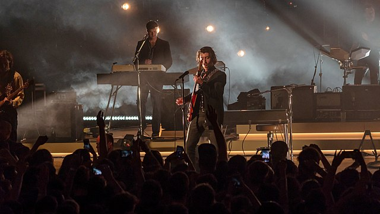
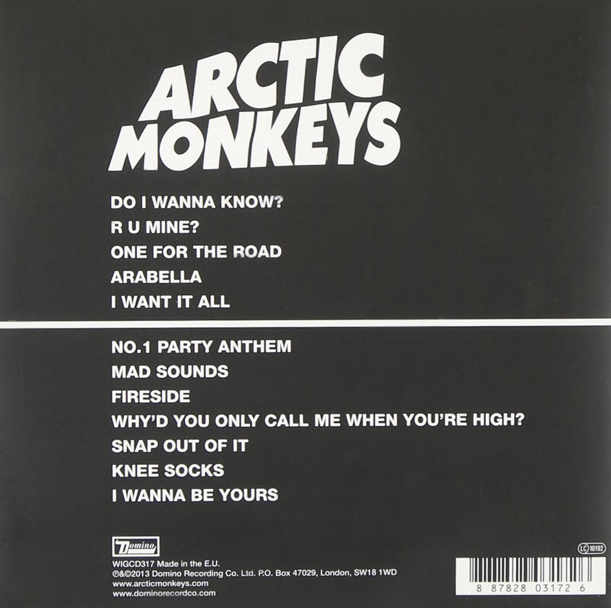
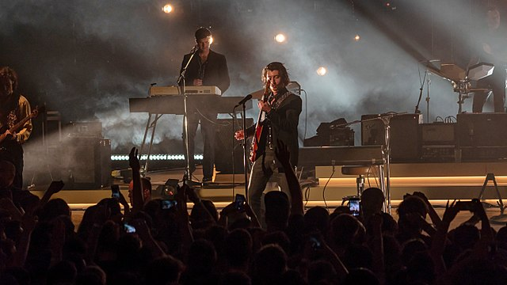
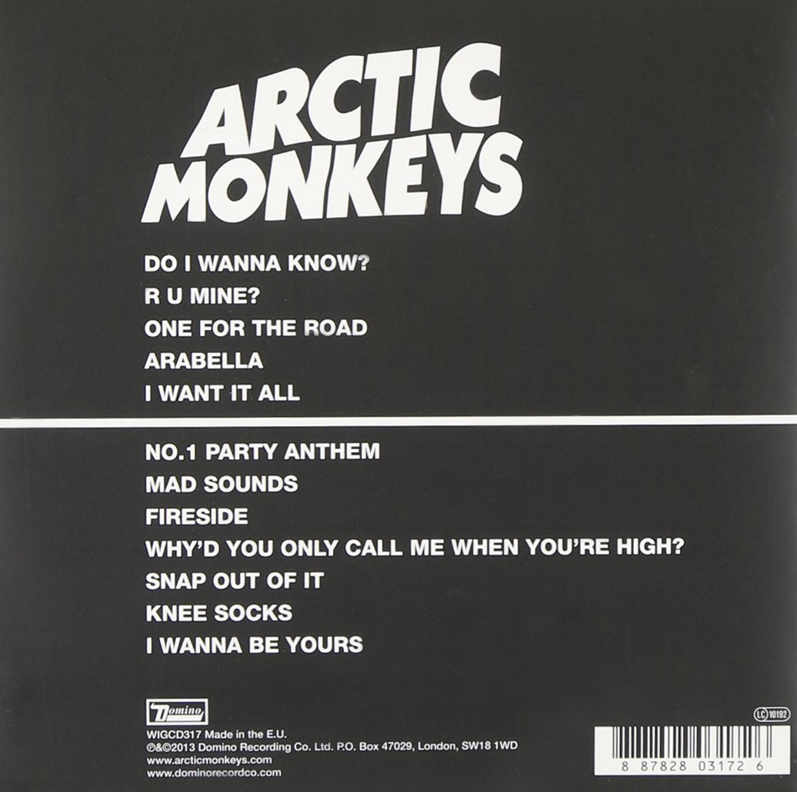

Arctic Monkeys es una banda británica de rock, formada en Sheffield, Reino Unido. El grupo está compuesto por el guitarrista principal y vocalista Alex Turner, el guitarrista Jamie Cook, el baterista Matt Helders, y con Nick O'Malley en el bajo
Arctic Monkeys presentando en el Royal Albert Hall en junio de 2018
La fama mundial de la banda aumentaría gracias al lanzamiento de AM (2013), el quinto disco de la banda, y el que obtendría mayor éxito comercial AM se convirtió en su segundo álbum en entrar en el Top 10 del Billboard en Estados Unidos

Alexander David Turner es un músico, compositor, cantante y productor discográfico británico. Mejor conocido por ser el vocalista y principal compositor de la banda de rock Arctic Monkeys
Arctic Monkeys presentando en INmusic festival el 25 de junio de 2013. El concierto es parte de AM Tour.
El 16 de junio, la banda lanzó a través de YouTube el videoclip del nuevo tema Do I Wanna Know?, un vídeo creado por David Wilson, el cual lleva más de 1000 millones de reproducciones. En este vídeo tiene como base la animación realiza con líneas de ondas blancas con algunas de colores que resaltan sobre un fondo negro.